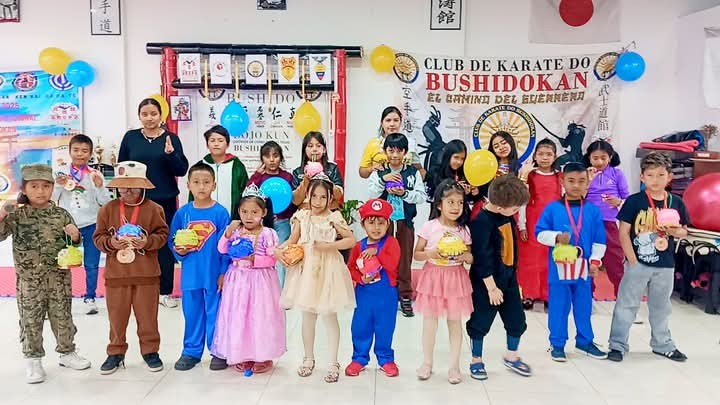
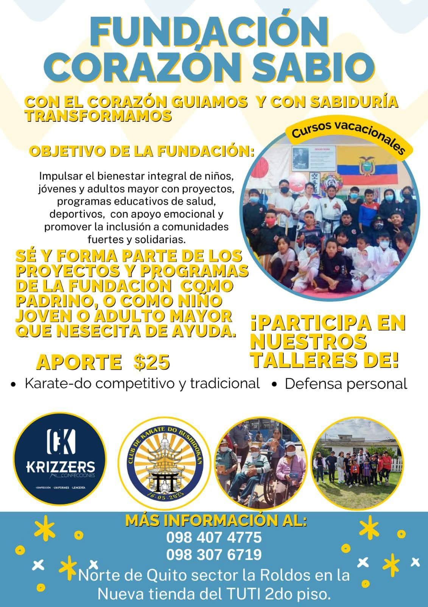

📝 Proceso de Inscripción
💰 Costos
- 🆕 Matricula: $5 USD (una sola vez)
- 📅 Mensualidad regular: $25 USD
- 🥋🌞 Curso Vacacional: $35 USD
- 👫 Descuento o beneficio para hermanos
🎓 Incluye: Clases semanales, evaluaciones, certificados y actividades
💵Pagos💰
- Banco Pichincha
- Cuenta de ahorro transaccional
- Número: 2214288689
- Ana Cristina Leiton Ibujes
- C.I 1723486583
🎁 Beneficios
- 💪 Desarrollo físico, emocional y mental
- ⚔️ Formación en valores del Bushido
- 🏆 Acceso a torneos, talleres y charlas
- 👨🏫 Entrenadores profesionales y seguimiento personalizado
- 🥋 Ceremonias oficiales de ascenso de cinturón
- 📜 Recepción de 3 certificados oficiales al completar cada etapa:
- ✅ Certificado con resolución ministerial del Club Especializado Formativo Bushidokan, avalado por el Ministerio del Deporte
- ✅ Certificado internacional de la International Karate Association (IKA Ecuador)
- ✅ Certificado de la Asociación de Karate-Do de Pichincha (AKP) y la Concentración Deportiva de Pichincha
📋 Requisitos
- 🆔 Copia de cédula del aspirante
- 🆔 Copia de cédula del representante (si es menor de edad)
- 📝 Llenar el formulario de inscripción
- 🏥 Certificado médico básico (puede entregarse en el primer mes)
- 🤝 Compromiso de respeto, disciplina y asistencia
📅 Planes y Servicios del Club Bushidokan
Elige el plan ideal para ti y forma parte de una comunidad que entrena con pasión, disciplina y propósito.
📌 Nuestros Planes
- 📝 Inscripción única: $5
- 📆 Plan Mensual: $25
- 📈 Plan Trimestral: $65
- 📊 Plan Semestral: $120
- 📅 Plan Anual: $220
- 👥 Promoción Grupal (3 personas): $65
💳 Formas de pago: Electivo, transferencia o tarjeta (presencial).
✔️ Incluye: Clase de prueba, evaluación física y asesoría nutricional básica.

🤝 Apadrina a nuestros deportistas
La Fundación Corazón Sabio apadrina a nuestros deportistas, lo que puede incluir:
- 💵 Apoyo financiero: Proporcionar recursos económicos para ayudar a los deportistas a cubrir gastos relacionados con su entrenamiento y competiciones.
- 🌟 Desarrollo personal: Ofrecer programas y recursos para ayudar a los deportistas a desarrollar habilidades personales y deportivas.
- 🏋️♂️ Acceso a recursos: Proporcionar acceso a instalaciones, entrenadores y recursos de alta calidad para ayudar a los deportistas a mejorar su rendimiento.
- 🤗 Red de apoyo: Crear una red de apoyo para los deportistas, incluyendo mentores, entrenadores y otros atletas experimentados.
- 🥇 Oportunidades de competición: Proporcionar oportunidades para que los deportistas participen en competiciones y eventos deportivos de alto nivel.
💬 La Fundación Corazón Sabio puede estar comprometida con el éxito y el bienestar de los deportistas, y trabajar para ayudarles a alcanzar sus objetivos y sueños.

⬅️ Volver al inicio